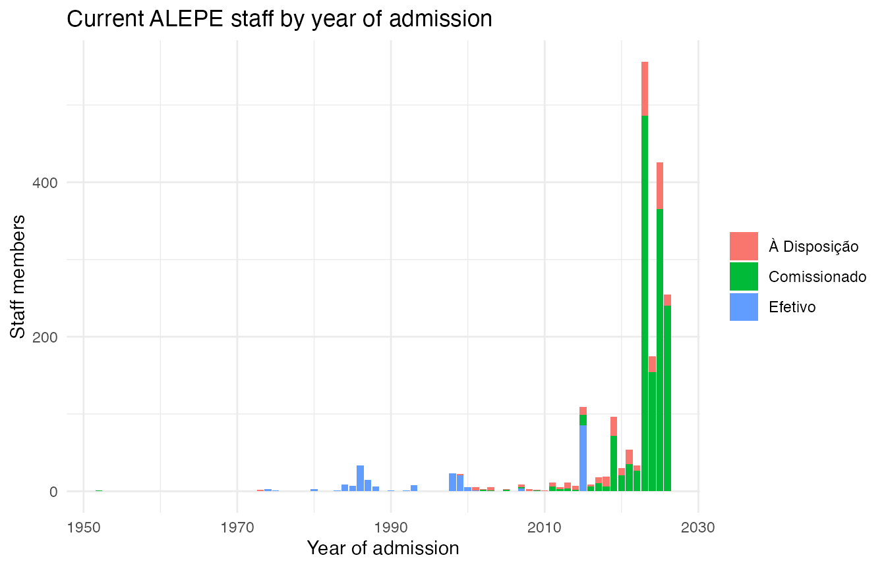
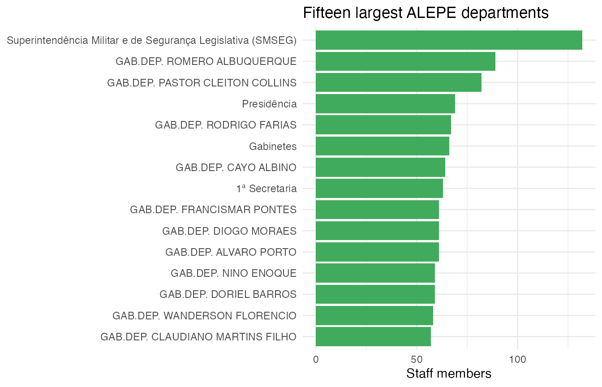

This vignette explores the composition of the Assembly’s workforce
with three endpoints: alepe_staff(),
alepe_positions(), and
alepe_departments().
Permanent vs. commissioned staff
staff <- alepe_staff()
staff |>
count(vinculo, sort = TRUE)
#> # A tibble: 3 × 2
#> vinculo n
#> <chr> <int>
#> 1 Comissionado 1459
#> 2 À Disposição 300
#> 3 Efetivo 227Admission dates are parsed to Date, so the hiring
history of the current roster is easy to chart:
staff |>
mutate(ano_admissao = as.integer(format(data_admissao, "%Y"))) |>
count(ano_admissao, vinculo) |>
ggplot(aes(x = ano_admissao, y = n, fill = vinculo)) +
geom_col() +
labs(
x = "Year of admission", y = "Staff members",
fill = NULL,
title = "Current ALEPE staff by year of admission"
) +
theme_minimal()
Largest departments
departments <- alepe_departments()
departments |>
summarise(total = sum(total), .by = nome_lotacao) |>
slice_max(total, n = 15) |>
ggplot(aes(x = reorder(nome_lotacao, total), y = total)) +
geom_col(fill = "#41ab5d") +
coord_flip() +
labs(
x = NULL, y = "Staff members",
title = "Fifteen largest ALEPE departments"
) +
theme_minimal()
Position structure
Career positions in the roster encode class and level in a single
string
("ANALISTA LEGISLATIVO > CLASSE 1 > NÍVEL 10"); a
quick split reveals the career ladder:
positions <- alepe_positions(status = "permanent")
positions |>
tidyr::separate_wider_delim(
cargo_nivel,
delim = " > ",
names = c("career", "class", "level"),
too_few = "align_start"
) |>
count(career, wt = total, sort = TRUE)
#> # A tibble: 24 × 2
#> career n
#> <chr> <int>
#> 1 TÉCNICO LEGISLATIVO 52
#> 2 ANALISTA LEGISLATIVO 49
#> 3 GERENTE 34
#> 4 ASSESSORAMENTO 24
#> 5 CHEFE DE DEPARTAMENTO 20
#> 6 POLICIAL LEGISLATIVO 9
#> 7 CHEFE DE EXPEDIENTE 6
#> 8 AGENTE LEGISLATIVO 5
#> 9 AUXILIAR DE SERVIÇOS 4
#> 10 CONSULTOR CHEFE ADJUNTO DE NUCLEO 3
#> # ℹ 14 more rows